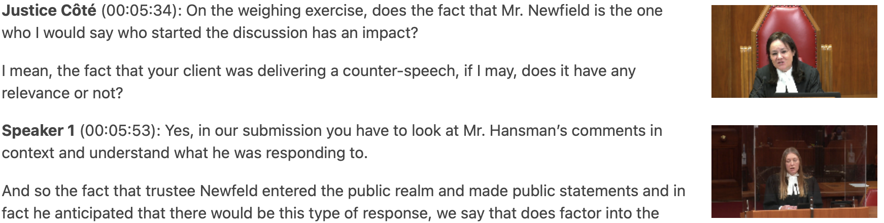
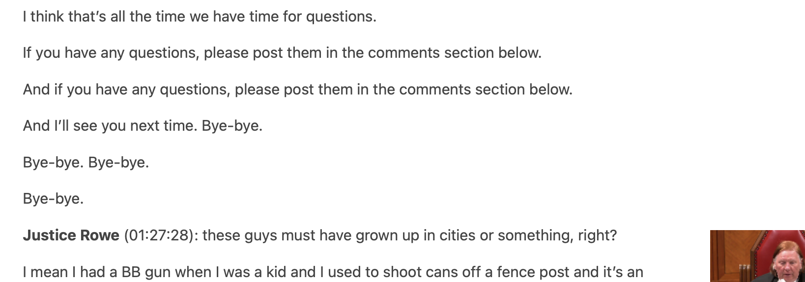

Supreme (AI) Transcripts

Using AI to increase access to law
The Supreme Court of Canada is dedicated to promoting public access to its work, and one way it does this is by broadcasting webcasts of most of its hearings on its website. These webcasts are an invaluable resource for anyone interested in the Court’s proceedings, including lawyers, researchers, law students, and journalists. They allow these groups to see how the Court’s judges engage with the issues before them, and to gain a better appreciation of the Court’s work.
However, video can be an imperfect medium for legal analysis. It is telling that most lawyers prefer to work with transcripts of proceedings because they are faster to review and easier to search.
Video and audio are difficult to analyze quantitatively, making it challenging for researchers to explore patterns in argumentation and advocacy. In contrast, in the United States, transcripts of each Supreme Court case are published, providing researchers with a valuable tool for empirical analysis.
Video also poses accessibility problems. Without closed captions or transcripts, the information in video and audio files is inaccessible to people with some types of sensory disabilities.
To further support access to the Court’s proceedings, and to provide resources to researchers, I have developed an AI transcriptionist that can automatically generate transcripts of the Court’s proceedings from its webcasts. This technology can provide a new user-friendly and accessible way for individuals to access and analyze the Court’s proceedings. It will also enable more comprehensive analyses of the Court’s work, which could provide valuable insights and improve our understanding of Court’s operations.
Capabilities of an AI transcriber
Today, I am publishing 122 transcripts, covering each webcast published between January 1, 2020 and November 3, 2022. Soon, I will open source all of my code. This transcriptionist can:
- transcribe hours long hearings in seconds;
- accurately transcribe French and English;
- recognize different speakers;
- note when people are speaking over each other; and,
- correctly identify Supreme Court of Canada justices.
This is an exciting technological moment. For cents on the dollar, an AI transcriptionist can produce a high fidelity, multi-lingual transcript.
This transcriptionist is based on the latest open-source technology. It uses the whisper and pyannote libraries to accurately transcribe and diarize speech, and the SpeechBrain library for advanced speech recognition.
Limitiations of AI transcripts
Of course, the transcriptionist is far from perfect, and its outputs should be used cautiously. In some cases, the transcriber inappropriately guess at or hallucinates meaning that is not present in the text. In other cases, it inappropriately repeats itself, getting stuck in its own loop.
Consider this example. The AI was trained on over 600,000 hours of audio and it looks like a lot of that audio was from Youtube. Sometimes the AI thinks it knows what someone will say, based on what it has heard before, but gets it wildly wrong. Here, for example, a lawyer did not actually invite the judges to leave their questions in the comments:

Like human transcriptionists, the AI often gets names wrongs and struggles when people speak over each other. Often it won’t quite get the moment of speaker change exactly right, sometimes attributing text to the person who was interrupted over the person who did the interrupting. With further development and time, no doubt the technology will improve.
You will notice that the AI performs better on long texts and poorly on short segments. Notice that each hearing begins with a clerk introducing the Court (‘La Court! The Court!’). Because this introduction is so short and the speaker is distant from the microphone, the AI often gets this introduction wrong.
It is also difficult for the transcriber to consistently apply the same grammar rules to different speakers. My impression is that when people speak slowly and read from a prepared text, the transcriber does a better job if splitting up sentences and applying correct punctuation. As people begin to speak faster, it is harder for the AI to keep up and determine how the text should be organized.